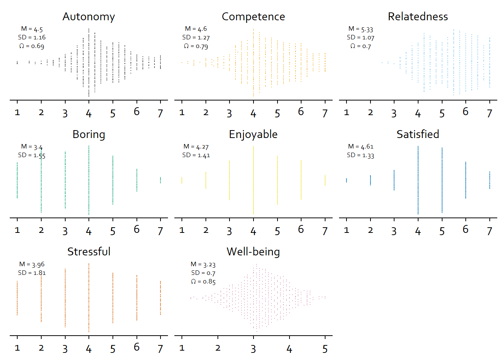

3 Descriptives and Visualizations Study 1
3.1 Overview
In this section, I describe and visualize the sample and variables.
We have variables on the meta-level (about the survey), the person-level, the app-level, and the day-level.
App-level data is in the apps_long data file; all other in the study1 data file.
Meta-level
- Duration of the entry survey, when participants reported traits (
duration_personality) - Duration of the exit survey, when participants reported their screen time (
duration_screen_time)
Person-level
- Participant identifier (
id) agein yearsethnicity- Notifications of social media apps over the past week (
weekly_notifications) - Basic Psychological Need Satisfaction (
autonomy_trait,competence_trait,relatedness_trait) plus their individual items (starting withbpns_) - Big Five (
extraversion,agreeableness,conscientiousness,neuroticsim,openness) plus their individual items (starting withbig_five_)
App-level
- What app participants report use for (
app) - On what rank was that app on participants’ top ten (
rank) - Notifications for that app for the week (
notifications_per_week) - Pickups for that app on that day (
pickups) - Screen time for that app on that day (
social_media_objective)
Day-level
- Duration of the survey on that day (
duration_diary) daythe survey was answered- Estimated time on social media on that day (
social_media_subjective) - Estimated pickups of social media apps on that day (
pickups_subjective) - Estimated notifications of social media apps on that day (
notifications_subjective) - Objective time on social media on that day (
social_media_objective) - Objective pickups of social media apps on that day (
pickups_objective) - Well-being on that day (
well_being) plus its individual items (starting withlow_andhigh_) - Basic psychological needs on that day (
autonomy_state,competence_state,relatedness_state) plus their individual items (starting withautonomy_,competence_,relatedness_respectively) - Experiences of satisfaction, boredom, stress, enjoyment on that day (
satisfied,boring,stressful,enoyable)
3.2 Meta-level
I begin with describing and plotting the duration of the entry and exit surveys. Table 3.1 shows descriptive stats; Figure 3.1 shows that twp participants had their entry surveys open for a day before pressing send, which skews the mean massively. However, those people’s data look good, so I wouldn’t exclude them here. Note: Colors are from here.
| variable | mean | sd | median | min | max | range | cilow | cihigh |
|---|---|---|---|---|---|---|---|---|
| duration_personality | 1H 5M 56S | 4H 36M 55S | 15M 40S | 1M 22S | 1d 9H 33M 36S | 1d 9H 32M 14S | 9M 50S | 2H 2M 3S |
| duration_screen_time | 20M 21S | 20M 8S | 13M 18S | 1M 8S | 1H 51M 29S | 1H 50M 21S | 16M 17S | 24M 26S |

Figure 3.1: Duration of surveys
3.3 Person-level
Let’s have a look at the final sample. Overall, our sample size is N = 96. The sample has a mean age of M = 20, SD = 1. The sample consists mostly of women (66 women, 30 men, and one non-binary participant).

Most participants are Asian, followed by White, Black, and Hispanic, see Table 3.2
| ethnicity | count | percent |
|---|---|---|
| Asian | 40 | 42 |
| White | 26 | 27 |
| Black or African American | 11 | 11 |
| Hispanic or Latino | 10 | 10 |
| Multiracial | 6 | 6 |
| NA | 2 | 2 |
| Native Hawaiian or Other Pacific Islander | 1 | 1 |
Alright, next we look at the objective count of notifications over the past week, aggregated across all apps. Table 3.3 shows that participants received quite a lot of notifications from social media apps only. That distribution is heavily skewed (Figure 3.2 by a couple of participants who received several thousand notifications over the week.
| variable | mean | sd | median | min | max | range | cilow | cihigh |
|---|---|---|---|---|---|---|---|---|
| weekly_notifications | 997.6354 | 673.4178 | 868.5 | 126 | 3382 | 3256 | 861.1883 | 1134.083 |
Figure 3.2: Weekly notifications (objective) across all apps
Now we look at the trait variables: the basic psychological need satisfaction and the big five. Note that I follow recent recommendations and calculate \(\omega\) for reliability. Table 3.4 shows the descriptive information of the three psychological needs and the big five. Figure 3.3 shows their distribution. The sample isn’t too large, so considering the small size, I’d say everything looks pretty good.
| variable | mean | sd | median | min | max | range | cilow | cihigh | omega |
|---|---|---|---|---|---|---|---|---|---|
| autonomy_trait | 4.51 | 0.88 | 4.50 | 1.25 | 6.88 | 5.62 | 4.33 | 4.68 | 0.82 |
| competence_trait | 5.16 | 0.70 | 5.31 | 3.50 | 6.50 | 3.00 | 5.01 | 5.30 | 0.75 |
| relatedness_trait | 4.54 | 1.03 | 4.56 | 2.38 | 6.62 | 4.25 | 4.33 | 4.75 | 0.88 |
| extraversion | 3.13 | 0.74 | 3.00 | 1.62 | 5.00 | 3.38 | 2.98 | 3.29 | 0.86 |
| agreeableness | 3.68 | 0.56 | 3.59 | 2.33 | 5.00 | 2.67 | 3.57 | 3.80 | 0.75 |
| conscientiousness | 3.50 | 0.58 | 3.50 | 2.00 | 4.89 | 2.89 | 3.39 | 3.62 | 0.75 |
| neuroticism | 3.29 | 0.50 | 3.38 | 2.00 | 4.38 | 2.38 | 3.19 | 3.39 | 0.59 |
| openness | 3.54 | 0.48 | 3.60 | 2.10 | 4.80 | 2.70 | 3.45 | 3.64 | 0.66 |

Figure 3.3: Distribution of trait variables
lm lines goes to data prone, whose idea I adapted.

Figure 3.4: Correlation matrix of trait level variables
3.4 App-level
First, Figure 3.5 shows what apps mostly nominated (i.e., used). We see that out of the sample, most participants had Messaging, Snapchat, Whatsapp etc. as part of their top ten.
Figure 3.5: Percentage of nominated apps
social_media_objective that have NA.
The NA here can mean participants just didn’t fill in anything, or they had zero duration on that day.
Because adding up the raw scores across apps was so close to the daily total, I’ll exclude NAs here.

Figure 3.6: Average daily objective time for all apps across participants and days

Figure 3.7: Average daily pickups for all apps across participants and days

Figure 3.8: Average notifications per week for all apps across participants
3.5 Day level
Alright, we’re at the most interesting section, the daily surveys. I first look at how long people typically took for a survey. Table 3.5 shows that the mean is highly skewed because of outliers and the median more appropriate to describe the duration. In Figure 3.9 we see that a couple of people took a long time from opening to submitting the survey. I checked those participants who took a long time in the data processing section. The maximum duration here from someone who didn’t open the survey on a Friday. So that duration is just the survey closing automatically after two days, which really drives up the mean.
| variable | mean | sd | median | min | max | range | cilow | cihigh |
|---|---|---|---|---|---|---|---|---|
| duration_diary | 50M 22S | 2H 44M 17S | 16M 0S | 25S | 2d 0H 27M 48S | 2d 0H 27M 23S | 35M 5S | 1H 5M 40S |

Figure 3.9: Duration of daily surveys
Alright, next I inspect overall response rate in the final sample, aka how many valid surveys do we have among the final sample. Each participant received five surveys, one for each day, so 96 participants x 5 = 480. We have 435 surveys in the final sample where participants actually responded, which means a 91% response rate among the final sample.
Let’s inspect response rate per day. As is to be expected, participants lost motivation over the course of the week. However, even the response rate on Friday is really high (at least among our sample of valid responses). We should still consider to take the day grouping into account when modelling the data later in the analysis.
Figure 3.10: Survey responses per day
Next, I describe and plot the distributions of the social media use variables. The distribution and CI is of the entire sample, not aggregated by participant or day first. Table 3.6 shows that participants weren’t too far off in their estimates, which is interesting. As expected (Figure 3.11), the social media variables are a bit skewed, but overall, they look fine.
| variable | mean | sd | median | min | max | range | cilow | cihigh |
|---|---|---|---|---|---|---|---|---|
| social_media_subjective | 153 | 112 | 130 | 5 | 692 | 687 | 143 | 164 |
| social_media_objective | 139 | 94 | 118 | 2 | 565 | 563 | 130 | 148 |
| error | 46 | 156 | -3 | -96 | 1186 | 1282 | 31 | 61 |
| pickups_subjective | 34 | 43 | 17 | 0 | 259 | 259 | 30 | 38 |
| pickups_objective | 49 | 31 | 44 | 0 | 196 | 196 | 46 | 52 |
| notifications_subjective | 61 | 99 | 30 | 0 | 700 | 700 | 52 | 71 |

Figure 3.11: Distribution of social media variables

Figure 3.12: Difference between subjective and objective social media use (difference in grey box)
Now let’s look at the state well-being and psychological needs variables plus the four experiences (e.g., boring).
Again, I calculate \(\omega\), but this time for the entire sample in Table 3.7.
That will necessarily bias the estimate because there’s multiple measures per person.
I’m not aware of a consensus reliability procedure for repeated measures.
Figure 3.13 shows that the data look pretty good.
| variable | mean | sd | median | min | max | range | cilow | cihigh | omega |
|---|---|---|---|---|---|---|---|---|---|
| well_being_state | 3.23 | 0.70 | 3.17 | 1.25 | 5 | 3.75 | 3.17 | 3.30 | 0.85 |
| autonomy_state | 4.50 | 1.16 | 4.25 | 1.00 | 7 | 6.00 | 4.39 | 4.60 | 0.69 |
| competence_state | 4.60 | 1.27 | 4.50 | 1.00 | 7 | 6.00 | 4.48 | 4.72 | 0.79 |
| relatedness_state | 5.33 | 1.07 | 5.50 | 2.50 | 7 | 4.50 | 5.23 | 5.43 | 0.70 |
| satisfied | 4.61 | 1.33 | 5.00 | 1.00 | 7 | 6.00 | 4.49 | 4.74 | NA |
| boring | 3.40 | 1.55 | 3.00 | 1.00 | 7 | 6.00 | 3.25 | 3.55 | NA |
| stressful | 3.96 | 1.81 | 4.00 | 1.00 | 7 | 6.00 | 3.79 | 4.13 | NA |
| enjoyable | 4.27 | 1.41 | 4.00 | 1.00 | 7 | 6.00 | 4.14 | 4.40 | NA |

Figure 3.13: Distribution of state variables

Figure 3.14: Correlation matrix of state level variables. social = screen time on social media; _s = subjective; _o = objective; not = notifications

Figure 3.15: Correlation matrix of use variables (state) and personality traits. social = screen time on social media; _s = subjective; _o = objective; not = notifications; extra = extraversion; agree = agreeableness; con = conscientiousness; neuo = neuroticism; open = openness
3.6 Plots for paper
Here, I’ll create summary figures for the paper. I’ll begin with plotting the traits.
For the plot, the data need to be in the long format.
dat <-
study1 %>%
group_by(id) %>%
slice(1) %>%
ungroup() %>%
select(all_of(c("id", trait_descriptives$variable))) %>%
pivot_longer(
-id,
names_to = "variable",
values_to = "value"
)
rename_levels <- c(
"Autonomy",
"Competence",
"Relatedness",
"Agreeableness",
"Conscientiousness",
"Extraversion",
"Neuroticism",
"Openness"
)
my_string <- "_trait"
# reorder and rename factor levels
clean_plot_data <-
function(
dat,
levels_to_rename,
string_to_remove
){
dat <-
dat %>%
mutate(
# in case it's social media variables
variable = case_when(
variable == "social_media_objective" ~ "Objective (h)",
variable == "social_media_subjective" ~ "Subjective (h)",
variable == "error" ~ "Accuracy (%)",
TRUE ~ variable
),
# remove _trait at the end and capitalize
variable = str_to_sentence(str_remove(variable, string_to_remove)),
variable = as.factor(variable),
variable = str_replace(variable, "_", "-"),
# reorder factor levels
variable = fct_relevel(
variable,
levels_to_rename
)
)
return(dat)
}
dat <- clean_plot_data(dat, rename_levels, my_string)
trait_descriptives <- clean_plot_data(trait_descriptives, rename_levels, my_string)Okay, we already have the aggregated info in trait_descriptives, so we can get to plotting.
# function for breaks
my_breaks <-
function(x) {
if (max(x) > 5){
1:7
} else {
1:5
}
}
# function for limits
my_limits <-
function(x) {
if (max(x) > 5){
c(1,7)
} else {
c(1,5)
}
}
# color palette
cb_palette <- c("#000000", "#E69F00", "#56B4E9", "#009E73", "#F0E442", "#0072B2", "#D55E00", "#CC79A7")
# plot
ggplot(
dat,
aes(
x = value,
y = 1,
color = variable,
fill = variable
)
) +
geom_quasirandom(groupOnX=FALSE, size = 0.3, alpha = 0.5) +
facet_wrap(
~ variable,
scales = "free_x"
) +
scale_x_continuous(breaks = my_breaks, limits = my_limits) +
geom_text(
data = trait_descriptives,
aes(
x = 1.6,
y = 1.4,
label = paste0("M = ", mean),
family = "Corbel"
),
size = 2.5,
color = "black"
) +
geom_text(
data = trait_descriptives,
aes(
x = 1.6,
y = 1.3,
label = paste0("SD = ", sd),
family = "Corbel"
),
size = 2.5,
color = "black"
) +
geom_text(
data = trait_descriptives,
aes(
x = 1.6,
y = 1.2,
label = paste0("\u03a9 = ", omega),
family = "Corbel"
),
size = 2.5,
color = "black"
) +
theme_cowplot() +
scale_colour_manual(values=cb_palette) +
scale_fill_manual(values = cb_palette) +
theme(
axis.text.y = element_blank(),
axis.title.x = element_blank(),
axis.title.y = element_blank(),
axis.ticks.y = element_blank(),
axis.line.y = element_blank(),
strip.background.x = element_blank(),
strip.background.y = element_blank(),
legend.position = "none",
text = element_text(family = "Corbel")
) -> figure1
figure1
ggsave(
here("figures", "figure1.tiff"),
plot = figure1,
width = 21 * 0.8,
height = 29.7 * 0.4,
units = "cm",
dpi = 300
)Okay, next the state variables.
dat <-
study1 %>%
select(all_of(c("id", state_descriptives$variable))) %>%
pivot_longer(
-id,
names_to = "variable",
values_to = "value"
)
rename_levels <- c(
"Autonomy",
"Competence",
"Relatedness",
"Boring",
"Enjoyable",
"Satisfied",
"Stressful",
"Well-being"
)
my_string <- "_state"
dat <- clean_plot_data(dat, rename_levels, my_string)
state_descriptives <- clean_plot_data(state_descriptives, rename_levels, my_string)Then to plotting.
# plot
ggplot(
dat,
aes(
x = value,
y = 1,
color = variable,
fill = variable
)
) +
geom_quasirandom(groupOnX=FALSE, size = 0.1, alpha = 0.5) +
facet_wrap(
~ variable,
scales = "free_x"
) +
scale_x_continuous(breaks = my_breaks, limits = my_limits) +
geom_text(
data = state_descriptives,
aes(
x = 1.6,
y = 1.4,
label = paste0("M = ", mean),
family = "Corbel"
),
size = 2.5,
color = "black"
) +
geom_text(
data = state_descriptives,
aes(
x = 1.6,
y = 1.3,
label = paste0("SD = ", sd),
family = "Corbel"
),
size = 2.5,
color = "black"
) +
geom_text(
data = state_descriptives,
aes(
x = 1.6,
y = 1.2,
label = paste0("\u03a9 = ", omega),
family = "Corbel"
),
size = 2.5,
color = "black",
alpha = if_else(is.na(state_descriptives$omega), 0, 1) # one-item measure don't have omega, so I make those see through
) +
theme_cowplot() +
scale_colour_manual(values=cb_palette) +
scale_fill_manual(values = cb_palette) +
theme(
axis.text.y = element_blank(),
axis.title.x = element_blank(),
axis.title.y = element_blank(),
axis.ticks.y = element_blank(),
axis.line.y = element_blank(),
strip.background.x = element_blank(),
strip.background.y = element_blank(),
legend.position = "none",
text = element_text(family = "Corbel")
) -> figure2
figure2
ggsave(
here("figures", "figure2.tiff"),
plot = figure2,
width = 21 * 0.8,
height = 29.7 * 0.4,
units = "cm",
dpi = 300
)Alright, last the smartphone use variables.
dat <-
study1 %>%
select(all_of(c("id", "social_media_objective", "social_media_subjective", "error"))) %>%
# turn to hours
mutate(
across(
contains("social_media"),
~ .x /60
)
) %>%
pivot_longer(
-id,
names_to = "variable",
values_to = "value"
)
rename_levels <- c(
"Objective (h)",
"Subjective (h)",
"Accuracy (%)"
)
my_string <- "_state"
dat <- clean_plot_data(dat, rename_levels, my_string)
social_media2 <- clean_plot_data(social_media, rename_levels, my_string) %>%
filter(variable %in% c("Objective (h)", "Subjective (h)", "Accuracy (%)")) %>%
# add x axis position for geom_text
mutate(
x_position = case_when(
variable == "Accuracy (%)" ~ 1200*0.8,
TRUE ~ 0.8*13
)
)And the plot.
# function for breaks
my_breaks <-
function(x) {
if (max(x) < 100){
seq(0, 13, 2)
} else {
c(-200, 0, 400, 800, 1200)
}
}
# function for limits
my_limits <-
function(x) {
if (max(x) < 100){
c(0, 13)
} else {
c(-200, 1200)
}
}
# plot
ggplot(
dat,
aes(
x = value,
y = 1,
color = variable,
fill = variable
)
) +
geom_quasirandom(groupOnX=FALSE, size = 0.2, alpha = 0.5) +
facet_wrap(
~ variable,
scales = "free_x"
) +
scale_x_continuous(breaks = my_breaks, limits = my_limits) +
geom_text(
data = social_media2,
aes(
x = x_position,
y = 0.7,
label = paste0("M = ", mean),
family = "Corbel"
),
size = 3,
color = "black"
) +
geom_text(
data = social_media2,
aes(
x = x_position,
y = 0.67,
label = paste0("SD = ", sd),
family = "Corbel"
),
size = 3,
color = "black"
) +
theme_cowplot() +
scale_colour_manual(values=cb_palette) +
scale_fill_manual(values = cb_palette) +
theme(
axis.text.y = element_blank(),
axis.title.x = element_blank(),
axis.title.y = element_blank(),
axis.ticks.y = element_blank(),
axis.line.y = element_blank(),
strip.background.x = element_blank(),
strip.background.y = element_blank(),
legend.position = "none",
text = element_text(family = "Corbel")
) -> figure3
figure3
ggsave(
here("figures", "figure3.tiff"),
plot = figure3,
width = 21 * 0.8,
height = 29.7 * 0.4,
units = "cm",
dpi = 300
)